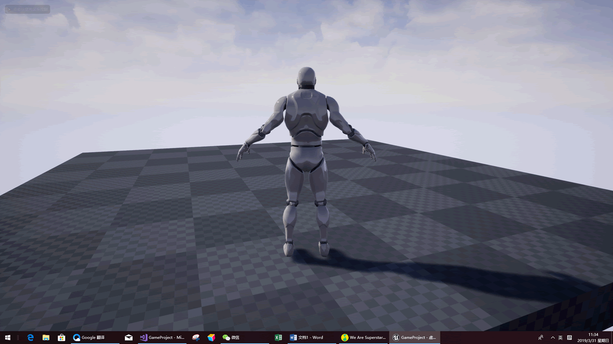
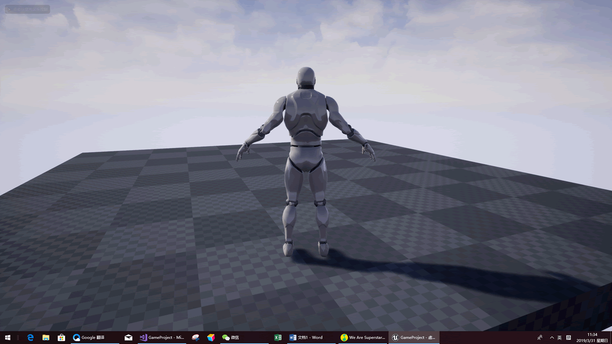

UE4添加人物摄像机
在这一节中，我们需要添加两个组件分别是摄像机弹簧臂组件和摄像机组件。
1) 打开VS编辑器，在PlayingCharacter.h文件添加摄像机弹簧组件和摄像机组件。
2) 在CPP文件中，添加两个头文件和在构造函数中注册这两个组件。
3) 由于我们的骨骼模型生成的时候它的位置和旋转是不对的，所以我们要设置一下我们骨骼模型的位置和旋转。
编译一下，回到编辑器中，发现我们的摄像机已经添加了进去。

完整代码如下。
1) PlayingCharacter.h
2) PlayingCharacter.cpp
摄像机弹簧臂组件
摄像机弹簧臂组件，可以想象成是我们的手臂和手。手拿着摄像机，当我们想移动摄像机的时候，我们移动的是我们的手臂而不是摄像机。1) 打开VS编辑器，在PlayingCharacter.h文件添加摄像机弹簧组件和摄像机组件。
//摄像机弹簧臂组件 class USpringArmComponent* SpringArmComponent; //摄像机组件 class UCameraComponent* CameraComponent;
2) 在CPP文件中，添加两个头文件和在构造函数中注册这两个组件。
#include "GameFramework/SpringArmComponent.h"
#include "Camera/CameraComponent.h"
//注册摄像机手臂组件
SpringArmComponent = CreateDefaultSubobject<USpringArmComponent>(TEXT("SpringArmComponent"));
//把这个组件绑定到根组件
SpringArmComponent->SetupAttachment(RootComponent);
//设置摄像机手臂和根组件之间的距离
SpringArmComponent->TargetArmLength = 300.0f;
//我们使用模型组件去进行旋转,如果不设置设个的话,Pitch轴无法进行视角移动
SpringArmComponent->bUsePawnControlRotation = true;
//注册摄像机组件
CameraComponent = CreateDefaultSubobject<UCameraComponent>(TEXT("CaameraComponent"));
//把摄像机绑定到摄像机手臂上
CameraComponent->SetupAttachment(SpringArmComponent);
3) 由于我们的骨骼模型生成的时候它的位置和旋转是不对的，所以我们要设置一下我们骨骼模型的位置和旋转。
//设置模型位置,这里我们把人物以Z轴移动了90个单位，也就向下移动了90个单位 GetMesh()->SetRelativeLocation(FVector(0,0,-90)); //设置模型面朝方向 GetMesh()->SetRelativeRotation(FRotator(0, -90,0));
编译一下，回到编辑器中，发现我们的摄像机已经添加了进去。

完整代码如下。
1) PlayingCharacter.h
// Fill out your copyright notice in the Description page of Project Settings.
#pragma once
#include "CoreMinimal.h"
#include "GameFramework/Character.h"
#include "PlayingCharacter.generated.h"
UCLASS()
class GAMEPROJECT_API APlayingCharacter : public ACharacter
{
GENERATED_BODY()
public:
// Sets default values for this character's properties
APlayingCharacter();
protected:
// Called when the game starts or when spawned
virtual void BeginPlay() override;
public:
// Called to bind functionality to input
virtual void SetupPlayerInputComponent(class UInputComponent* PlayerInputComponent) override;
void MoveForward(float val); //人物往前移动
void MoveBack(float val); //人物向后
void MoveRight(float val); //人物向右
void MoveLeft(float val); //人物向左
//跳跃开始
void JumpStart();
//跳跃结束
void JumpEnd();
private:
//这个是骨骼模型
USkeletalMesh* SkeletalMesh = nullptr;
//摄像机弹簧臂组件
class USpringArmComponent* SpringArmComponent;
//摄像机组件
class UCameraComponent* CameraComponent;
};
2) PlayingCharacter.cpp
// Fill out your copyright notice in the Description page of Project Settings.
#include "PlayingCharacter.h"
#include "GameFramework/SpringArmComponent.h"
#include "Camera/CameraComponent.h"
// Sets default values
APlayingCharacter::APlayingCharacter()
{
SkeletalMesh = CreateDefaultSubobject<USkeletalMesh>(TEXT("SkeletalMesh"));
//加载模型
SkeletalMesh = LoadObject<USkeletalMesh>(NULL,TEXT("SkeletalMesh'/Game/TwinSwordAnimsetBase/UE4_Mannequin/Mesh/SK_Mannequin.SK_Mannequin'"));
//把我们的模型赋值到模型组件
GetMesh()->SetSkeletalMesh(SkeletalMesh);
//设置模型位置
GetMesh()->SetRelativeLocation(FVector(0,0,-90));
//设置模型面朝方向
GetMesh()->SetRelativeRotation(FRotator(0, -90,0));
//注册摄像机手臂组件
SpringArmComponent = CreateDefaultSubobject<USpringArmComponent>(TEXT("SpringArmComponent"));
//把这个组件绑定到根组件
SpringArmComponent->SetupAttachment(RootComponent);
//设置摄像机手臂和根组件之间的距离
SpringArmComponent->TargetArmLength = 300.0f;
//我们使用模型组件去进行旋转,如果不设置设个的话,Pitch轴无法进行视角移动
SpringArmComponent->bUsePawnControlRotation = true;
//注册摄像机组件
CameraComponent = CreateDefaultSubobject<UCameraComponent>(TEXT("CaameraComponent"));
//把摄像机绑定到摄像机手臂上
CameraComponent->SetupAttachment(SpringArmComponent);
}
关注公众号「站长严长生」，在手机上阅读所有教程，随时随地都能学习。内含一款搜索神器，免费下载全网书籍和视频。

微信扫码关注公众号